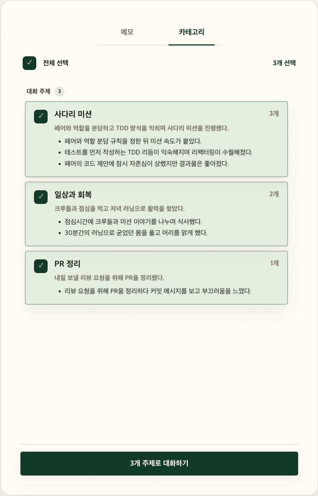
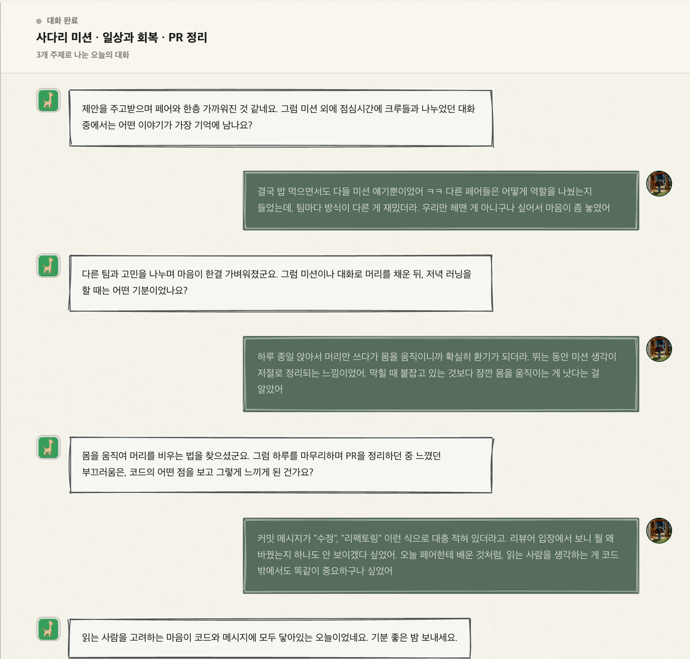
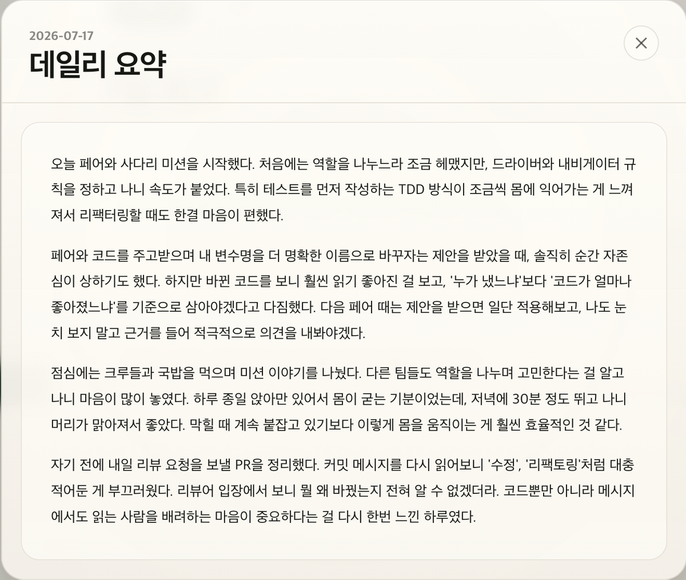
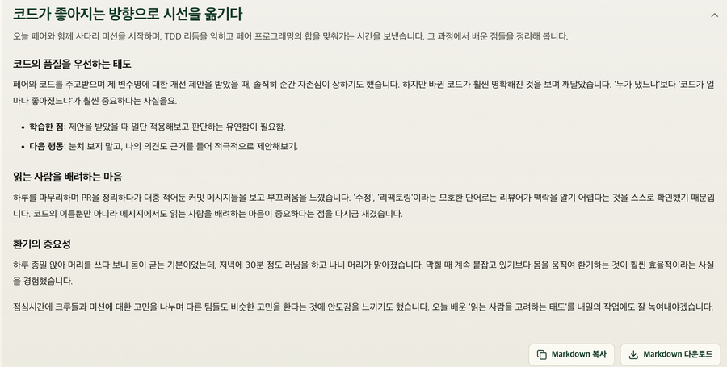

내 말투를 비추는 거울
온보딩에서 나의 글과 회고 스타일을 읽고,
내 말투와 호흡에 맞춰 대화해요.
낯선 상담사가 아니라 옆자리 동료처럼요.
오늘은 어떤 하루였나요?
일상 속 메모를 대화와 회고로 이어주는 하루 기록 서비스예요.
GitHub 계정으로 바로 시작 · 설치 없이 웹에서
먼저 구경해 볼까요?
데모 영상이 들어갈 자리예요
assets/demo.mp4 를 추가하면 이 자리에 재생됩니다



어렵지 않아요
떠오를 때마다 짧게. 웹에서도, 맥 메뉴바에서도 하루 동안 자유롭게 적어요.
흩어진 메모를 실록이가 카테고리별로 정리해요. 오늘 이야기 나눌 주제를 골라요.
감정 → 이유 → 배운 점까지, 좋은 질문이 하루를 한 겹 더 깊게 돌아보게 해요.
매일 아침, 어제의 메모와 대화가
한 편의 일기로 정리되어 있어요.
기간을 골라 회고를 만들고, 기록한 날은 잔디로 채워져요.
꾸준함이 눈에 보여요.
실록이는 조금 특별해요
온보딩에서 나의 글과 회고 스타일을 읽고,
내 말투와 호흡에 맞춰 대화해요.
낯선 상담사가 아니라 옆자리 동료처럼요.
최근 며칠의 기록을 기억하고 자연스럽게 이어줘요.
어제의 고민이 오늘의 질문으로 돌아옵니다.
감정 → 이유 → 판단 기준 → 배운 점 → 다음 행동.
한 걸음씩 내려가는 질문이 회고의 깊이를 만들어요.
대화만 해도 하루가 일기로 정리돼요.
메모만 남긴 날도 소중한 기록으로 남습니다.